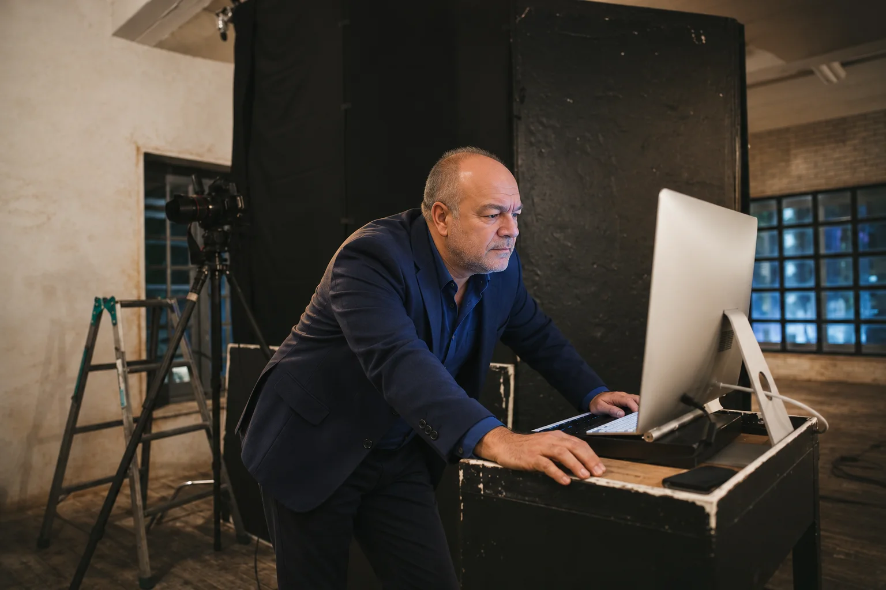

MAF RODA Agrobotic
Tracing fruit from bin to shipment.
I lead the Americas traceability work, connecting packing-line hardware, operator tools, and the records a packhouse needs for a recall.
Read the case studySenior Solution Architect
I’m Kevin Guerra. I build industrial software, modernize complex platforms, and make critical systems faster and easier to maintain.
Open to senior architecture roles · US remote or on-site

Selected work
MAF RODA Agrobotic
I lead the Americas traceability work, connecting packing-line hardware, operator tools, and the records a packhouse needs for a recall.
Read the case studyA seven-month rebuild with a simpler codebase and a new access control layer.
Google case studyVMware
A Python framework replaced roughly 80,000 lines of Perl with 8,000 and ran tests about eight times faster.
VMware case studyDirecTV
A C++ OCR pipeline turned on-screen set-top box text into automated checks.
DirecTV case studyExperience
How I work
I like complex systems with concrete constraints: hardware on a packing line, a legacy codebase with no clear owner, or a test suite too slow to run.
See how I can help“He knows what it takes to write correct, performant, and secure systems.”
Georgiy Treyvus · Worked with Kevin at Google
Read recommendationsGet in touch
I’m open to senior architecture roles and consulting.